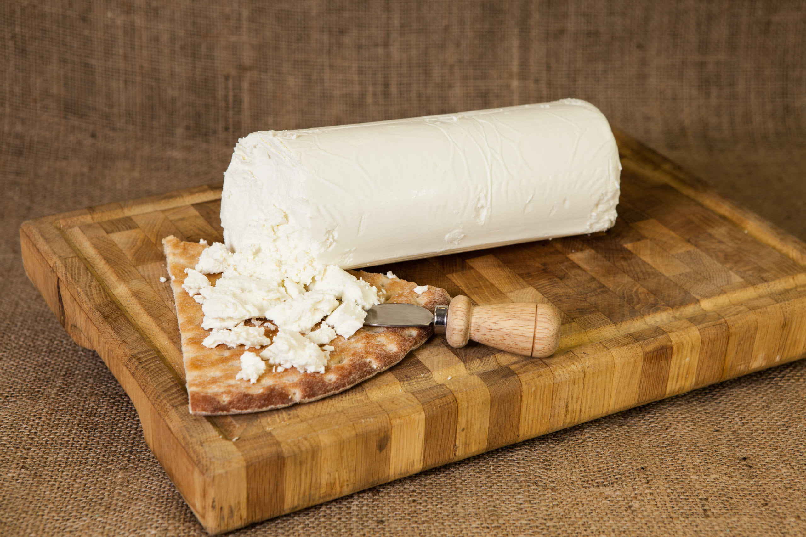
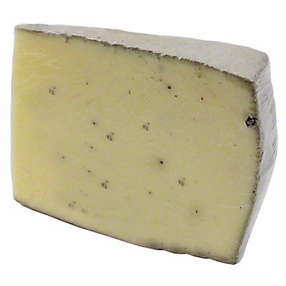

Spain#
6 Month Aged Ossau Iraty (Agour)#
{kind=link}
Style: Other
Milk: Sheep
Purchase location: Whole Foods
Purchase date: 07/11/22
Julie’s comments: Firm, tan, aged cheese with harder transparentish outer rim & thin funky rind. Grassy & sweet/caramely flavor, but also nice aged nutty & creamy flavor. Gummy texture that turns creamy in mouth. Very snackable. 3.48/5
Andrew’s comments: Caramely, slightly sharp, salty, creamy inside, with medium soft texture. Extra snackable. Rind is hard & dry, not great texture, but interesting funky taste, quite different. 3.7/5
Campo de Montalban (Quesos Corcuera)#

Style: Manchego
Milk: Sheep + milk + goat
Purchase location: Weaver Street
Purchase date: 04/15/21
Julie’s comments: Firm/semi hard, creamy. + Will melt a little. Tastes like a Manchego had a baby with a mild cheddar. I like it! A bit earthy, yummy. 4.3/5
Andrew’s comments: I agree, Machego-like! Mild but great snack cheese Nice with chips and salsa 3.8/5
Capricho de Cabra (Mitica)#
{kind=link}
Style: Chevre
Milk: Goat
Purchase location: Weaver Street
Purchase date: 07/31/22
Julie’s comments: Soft, crumbly, white round cheese with classic goat look. Creamy, buttery texture - melts in the mouth. Very rich, tangy & somehow buttery flavor, with a little bit of grass taste too. One of the best goat cheeses I’ve had I think. So rich, hard to eat a lot. 4.03/5
Andrew’s comments: Creamy & buttery flavor, melty once the crumbles get in your mouth. Goes through a couple phases, mild goaty/creamy up front, with heavy tang that kicks in later. Benefits a lot from some salt on a chip. 4.0/5
Drunken Goat (Mitica)#

Style: Flavored
Milk: Goat
Purchase location: Murray’s Cheese
Purchase date: 01/14/22
Julie’s comments: Wine flavor & smell up front with the purple rind. Creamy, very smooth firm center - nutty and earthy, not salty, quite mild. I was expecting a sharper cheese, but this is creamier with a teeeeny funk at the end. Sadly a bit underwhelming without a glass of wine to accompany. 2.51/5
Andrew’s comments: Cheese is creamy, milky, Nice but not the most exciting. Medium crumbly/chewy texture. The wine rine is tasty but very subtle, I wish it was more forward. 2.4/5
Thanks to Tim & Abigail Necarsulmer for this cheese!
Leonara (Mitica)#
{kind=link}
Style: Brie-like
Milk: Goat
Purchase location: Whole Foods
Purchase date: 11/25/21
Julie’s comments: Soft white goat’s milk cheese, gray rind, looks like brie. Funky & tanky, very creamy, texture almost like cream cheese. At first I didn’t like it, but it grew on me. Very rick, but also light/bright. 4.13/5
Andrew’s comments: Very unusual, creamy & soft like brie but with blue-like funkiness. Great on its own. Would be interesting on a burger. 4.3/5
Manchego (Ponce de Leon)#
{kind=link}
Style: Manchego
Milk: Sheep
Purchase location: Weaver Street
Purchase date: 10/01/22
Julie’s comments: Pale tan firm with classic striped brown/purple rind. Nutty, salty, buttery cheese, a bit of caramel aftertaste, but also meaty? Very snackable - not an excellent Manchego (2.0/5), but still very tasty in general. 3.92/5
Andrew’s comments: Salty, buttery, tangy, bright, and semi sharp. Sort of firm, a bit crumbly. So snackable, could (no, did) eat a lot of this. 3.9/5
Naked Goat Cheese (Quesera Montesinos)#

Style: Other
Milk: Goat
Purchase location: Fresh Market
Purchase date: 07/02/22
Julie’s comments: Slightly off-white, firm, mildly crumbly cheese, no rind. Creamy texture when softened. Tangy goat flavor, grassy, slightly acid, buttery flavor. Incredibly snackable - could eat a whole block at once. 4.29/5
Andrew’s comments: Mmmm so tasty & snackable. Salty, tangy, creamy, some cottage cheese essence but tastier. Fairly soft & crumbly, plus some melting in mouth. 4.55/5
Sottocenere al Tartufo (Mitica)#
{kind=link}
Style: Flavored
Milk: Cow
Purchase location: Whole Foods
Purchase date: 03/26/22
Julie’s comments: Pale white cheese with dusty, 2mm thick purple-black rind. Cheese is creamy, buttery, garlicky - very truffle-like. Sweet undernotes, but mostly strong truffle flavor overpowers. Rind is gritty, but I don’t hate it. Very snackable, but rich so I eat/want less. 3.01/5
Andrew’s comments: Very truffly & garlicky, tastes more like an hors d’oeuvres than just cheese. The underlying cheese is creamy though unremarkable, but truffle flavor dominates. Snackable on its own, very nice with naan, probably other bread. 3.3/5
Spanish Manchego (Trader Joe’s)#
{kind=link}
Style: Manchego
Milk: Sheep
Purchase location: Trader Joe’s
Purchase date: 10/15/22
Julie’s comments: Tan offwhite firm cheese with a stripy red waxy rind. Kind of crumbly texture. Buttery grassy taste, a little bit of nuttiness as well. Not the best Manchego I’ve ever had but it is incredibly snackable and I could eat a whole block in one sitting if I didn’t throw up first. 3.78/5
Andrew’s comments: Has that classic tangy, milky Manchego taste, with a bit of grassiness on the finish. Crumbly chewy texture, with waxy rind adding nice bit of firmness. This one has dried out a bit since we got it. Not the peak Manchego but still very snackable. 3.5/5
The Smokin’ Goat (Mitica)#

Style: Other
Milk: Goat
Purchase location: West Chester Food Cupboard
Purchase date: 09/17/22
Julie’s comments: Ivory cheese with a tan thin rind - firm, homogeous. Mild goaty, tangy with a nutty and butter/umami after notes, like a Gouda I think. Snackable, unremarkable. 2.45/5
Andrew’s comments: Smoky, meaty flavor, and some sweeter caramelly, tangy notes. Semi-rubbery, smooth texture, slightly harder rind. Super snackable, could eat a lot of this. But not the most remarkable. 3.6/5
Thanks to Barb & Rob Necarsulmer for this cheese!
Zamarano (Mitica)#
{kind=link}
Style: Other
Milk: Sheep
Purchase location: Whole Foods
Purchase date: 05/15/22
Julie’s comments: Off white firm cheese with thin patterned red-brown rind. Creamy, milky, mildly tangy/yogurty flavor. A bit grassy, chalky in a good way, also has tastes of sliced American cheese, but only the good part of that. Versatile, snackable, but not a standout. Lasts long! Cool. 3.23/5
Andrew’s comments: Salty, creamy, tangy, semi-sharp. True, a hint of American cheese vibe, but very tasty. Nice semi-firm texture, with some subtle gritty “sparkles”, and I like the grooves on rind. Very snackable, and would make amazing grilled cheese/mac & cheese. 4.1/5